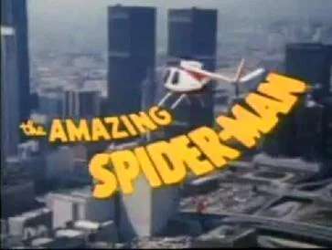

The Amazing Spider-Man (1977 - 1979)
| Show | First Aired | Image |
|---|---|---|
| The Amazing Spider-Man Live action · CBS · 2 seasons · 13 episodes |  |
| Overview |
|---|
The Amazing Spider-Man (known simply as Spider-Man for the second season) is an American superhero television series, based on the Marvel Comics character Spider-Man. It is the second live-action television series appearance of a Marvel character, after the Spidey Super Stories segment on The Electric Company. It originally aired on CBS in the United States from September 14, 1977 to July 6, 1979. Though it was a considerable ratings success, the CBS series was cancelled after just 13 episodes, which included a pilot film airing in autumn of 1977. |
| Detail | Value |
|---|---|
| Format | Live action |
| Network | CBS |
| First aired | September 14, 1977 |
| Last aired | July 6, 1979 |
| Seasons | 2 |
| Episodes | 13 |
| Running time | 40–45 minutes |
| Created by | Alvin Boretz |
| Based on | Spider-Man by Stan Lee and Steve Ditko |
| Starring | Nicholas Hammond, Robert F. Simon, Chip Fields, Ellen Bry |
| Music | Stu Phillips, Dana Kaproff |
| Production companies | Charles Fries Productions, Dan Goodman Productions, Marvel Comics Group, Columbia Pictures Television |
| Country | United States |
| Language | English |
Overview and details are from Wikipedia (CC BY-SA 4.0).